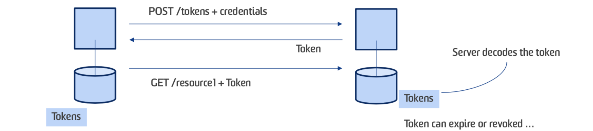

- COMP9321 Data Services Engineering @UNSW 18S1
- Lecturer: Helen Paik
- Couse Outline
Week 1: Applications Integration
Applications Integration: A set of services and solutions for bringing together disparate application and business processes as needed to meet the diverse information requirements of your customers, partners, suppliers and employees.
Data Integration
2 ways:The evolution of programming abstractions:
functions/procedures -> modules-> objects -> components -> services
- PL: formatting, presenting information to clients (e.g., JSP)
- AL: determines what the system actually does, enforcing the business rules and processes (e.g., a program that implements customer registration)
- RM: storage, indexing, and retrieval of the data necessary to support the application logic layer (e.g, RDBMS)
Information System Design
- Top Down Design: Client -> PL -> AL -> RM
- Focus first on the high-level objectives, then proceed to define everything required to achieve those goals
- tightly coupled
- few information systems nowadays can be developed this way
- Bottom Up Design: RM -> AL -> PL -> Client
- legacy systems: In a bottom up design, many of the basic components already exist. These are stand-alone systems which need to be integrated into a new system.
- loosely coupled: The components do not necessarily cease to work as stand-alone components. Often old applications continue running at the same time as new applications.
- wider usage: This approach is used widely because legacy systems exist and typically cannot be easily replaced.
Architecture of information systems
- 1-Tier: see the picture above
- users/programs access the system through “dumb” terminals, whose display is controlled by the information system
- 2-Tier:
- the notion of “service” (i.e., the client invokes a service implemented by the server)
- the notion of public service interface (how the client can invoke a given service)
- The concept of API -> can support diverse clients, change/evolve the server without affecting the clients.
- 3-Tier:
- application logic layer:
- simplifies the design of the clients by reducing the number of interfaces
- provides transparent access to the underlying systems
- takes care of locating resources, accessing them, and gathering results.
- application logic layer:
Week 2: Web Applications
HTTP Request Methods
Layers
MVC
- Model: Structures your data in a reliable form and prepares it based on controller’s instructions
- View: Displays data to user in easy-to- understand format, based on the user’s actions
- Controller: Takes in user commands, sends commands to the model for data updates, sends instructions to view to update interface.
Flask Web Framework
see Lab2
Manage the User State
HTTP is a stateless protocol.
- A single request/response;
- Nothing is remembered ‘between requests’ from the same user;
Session
The basic idea:
- When a user request comes in, besides sending the response, the server also sends an identifier. The identifier is recorded by the server
- The identifier will accompany all subsequent requests from the same user
- When the server receives a request with the same identifier, it can treat the request as belonging to the same user.
Cookie
- A small piece of data sent from the server – stored in the client’s Web browser Supported by all Web frameworks (part of HTTP) – creating/manipulating cookies
- Cookies are set/created in an HTTP header (in Response)
- When a cookie is present, its value is sent to the server with each subsequent request (The cookie value is stored in an HTTP header called Cookie)
Week 3: Rest I
API
- XML based
- Json based
Rest
Architectural Constraints of REST:
- Client-Server
- Uniform Interface
- Statelessness
- Caching
- Layered System
- Code on demand (optional)
前后端完全分离！
- Safe & Idempotent(幂等)
Uniform Interface must be safe and idemponent- Safe methods: Do not modify resources.
- Idempotent: Can be called many times without different outcomes.
| GET | HEAD | OPTIONS | POST | PUT | PATCH | DELETE | |
|---|---|---|---|---|---|---|---|
| Safe | √ | √ | √ | ||||
| Idempotent | √ | √ | √ | √ | √ |
Week 4: Rest II
URI
- URI design: use /CoffeeOrders instead of /getCoffeeOrders

- Status Codes
API authentication
- HTTP Basic (and Digest) Authentication: IETF RFC 2617
- Token-based Authentication
- API Key [+ Signature]
- OAuth (Open Authorisation) Protocol - strictly uses HTTP protocol elements only
HTTP Basic Auth
- The password is sent over the network in base64 encoding - which can be converted back to plain text
- The password is sent repeatedly, for each request - larger attack window
- HTTP Basic Auth combined with SSL could work for some simple situations. But normally this scheme is not recommended and considered not secure “enough”
Token-based method
- User enters their login credentials. Server verifies the credentials are correct and returns a token.
- This token is stored client-side (local storage). Subsequent requests to the server include this token.
- The password is not sent around.

(i) a token can be effectively used to authenticate requests in a stateless fashion
(ii) login password of the client is not revealed
API Key method
- From User (API consumer) point of view:
- Sign up for the service, API key for the user is issued by the server
- Copy the issued API key [and secret] in all requests
- ≈ user id and password, except it is meant to be authenticate the ‘client application’
OAuth
Javascript
- AJAX (Asynchronous JavaScript and XML)
- AJAX can load data from external sources and into JavaScript seamlessly without page reloads
- This idea is implemented by XMLHttpRequest object which allows the JavaScript to send and retrieve data from a server all in the background (asynchronously).
- The name simply refers to the implementation technique of this idea.
Week 5: Visualisation
Graphs VS. Charts
- Graphs: rely on X or Y or both axes to make sense. At least one of these axes is numeric. Graph draws correlation between these axes by plotting points along the grid
- Charts: not restricted by X/Y axes, not necessarily numerical
BAR graphs: Highly effective in terms of ‘parsing the information’
- STACKED Bar graphs(堆叠条形图): Compare data within groups
- STACKED Percentage Bar graphs: Compare relative contribution of each category to the whole
Line graphs:
- To show values “over time” or a continuous interval
- Stories over “Timeline”
Scatter Plot graphs(散点图): To show two variables and their correlations (i.e., X axis vs. Y axis)
- Pie Charts:
- Although commonly used, not considered an effective form. Human brain is not wired to parse round shape areas and arcs
- Normally other graphs can do the same job (e.g., BAR graphs)
- Maybe OK when showing two variables (<, >, similar, etc.)
- D3 (Data Driven Documents)
- SVG (Scalable Vector Graphics)
- Scales: Scales are functions that map from an input domain to an output range. To resize the data to fit into SVG.
Week 6: Data Access I
Relational Model vs. “NoSQL” Models
- Relational Models
Problems with Relational Models:
The Object-Relational Mismatch (Impedance Mismatch):- Refers to the problem of a mismatch between application data model (your business objects) and data model for storage (in relational tables)
- This mismatch creates a need for an awkward translation layer between the objects in the application code and the database model of tables/row/columns.
- Document model
- Most document-based databases do not enforce any schema in documents (schema- less databases)
- DOC model is considered advantageous if the docs in the collection tend to have different structures (e.g., different types of related objects)
- Data locality for queries - doc-based systems store a document as a single continuous string as JSON or XML (or a binary variant)
Data as a service
- Data integration/aggregation from multiple sources (data prep)
- Data publication for consumer access (API)
- ATOM
- Atom represents data as lists, called feeds. Feeds are made up of one or more timestamped entries, which associate document metadata with web content.
- Atom Publishing Protocol (AtomPub), a protocol that is built on top of Atom, and which is used for publishing and editing web resources -> Using HTTP actions
- OData (Open Data protocol) —— ATOM-based data publication forma
- A standard API for data access (managed by the OASIS group)
- Based on Web data feed standard ATOM and AtomPub
- OData VS. SQL over URL
Week 7: Data Access II
- Graph-like Models
- Vertices are not limited to the same type of data.
- Really flexible
XML model
ORM (Object Relational Mapping)
- ORM is the process of associating object oriented classes (your application domain model) with database tables
Stay in application level, do not need to worry about sql.
Two general “styles” of ORM:
- Data Mappers: Data Mapper tries to separate the details of persistence from the objects themselves
- Active Record: Active Record has domain object handle their own persistence.
Object.save() => the persistence logic is “attached” to the object.
Save() == Insert/Update
Week 8: Data Curation
Data Curation
- Algorithmic
Algorithmic approaches mostly relied on machine learning algorithms, and user capabilities in tuning and gathering information for training models - Rule Based
Rule Based approaches are a kind of static data curation, that users uses rules in forms of IF … THEN for curating data. This approach is less productive compared to algorithmic approaches but easier. - Hybrid
Hybrid approaches can be used in cases the learning algorithms are not working well, thus there is a need to augment algorithms with rules.
OMM
- Obtaining: Extracting data from a variety of sources
- Ensure that any identifying data is de-identified
- Massaging: Transforming data into manageable form
- take a bunch of raw data and metadata
- take a schema for storing this data
- then map the raw data into the schema
- Managing: Loading the data into a platform for use
- may not have (enough) metadata to match
- data may have a different schema
- some data values may be missing / incorrect
Week 9: Data Analysis
Data-driven organizations and data analytics
- Product and service recommendation
- Customer support
- Dashboard and reporting services
- Customer engagement
- Promotions and deals
- Product and service customization
- Communication
- Key process performance indicators
- Process execution predictions
- Decision making support services
- Process mining
- Dynamic process adaptation
- People to task assignment
- Compliance verification
- Product and service advertisement
- Sentiment analysis
- Demographics analysis
- Virality
- Social network insights
- Productivity
- Work planning
- Employee engagement
- Recruitment
- Training
- Job satisfaction
- Support
Data analytics technologies and services
Marketing analytics on Google API
- Data collection and management
- Overall performance of your products (websites, apps, etc.)
- Evaluate the content in your products
- Understand your audience
- Data visualization and analytics
Machine Learning on AWS
- Natural language conversational services on Dialogflow
Example1:Stanford Core NLP
Natural language functionalities
- Part of speech
- Lemmas
- Named entities
- Dependency parse
- Relation extraction
- Coreference
- Sentiment analysis
Example 2: PredictionIO
- Open source Machine Learning server
- Build and deploy ML web services
- Customizable, template-based engines
- Real-time ML services both for training and prediction
- Built on top of state of the art algorithms and tools